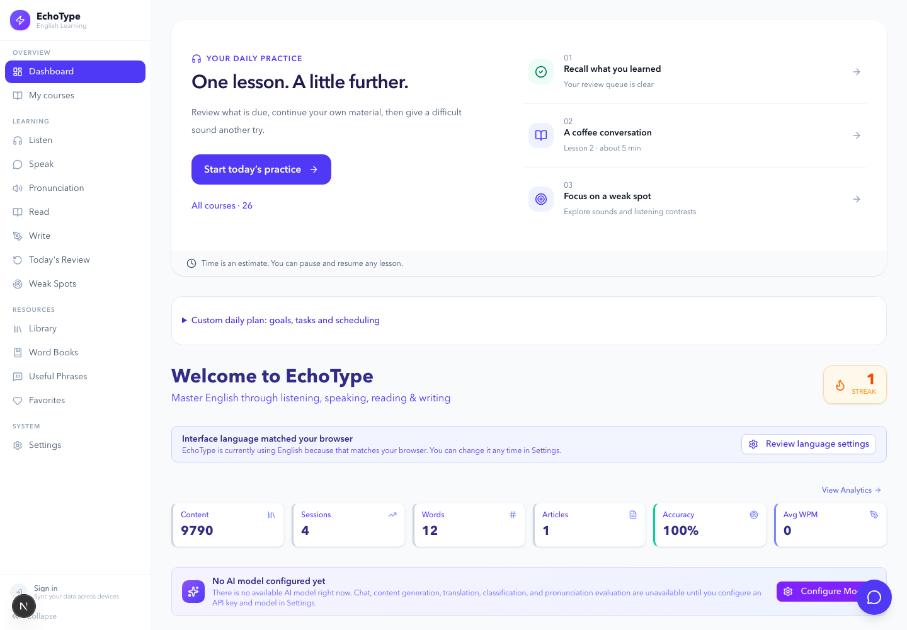
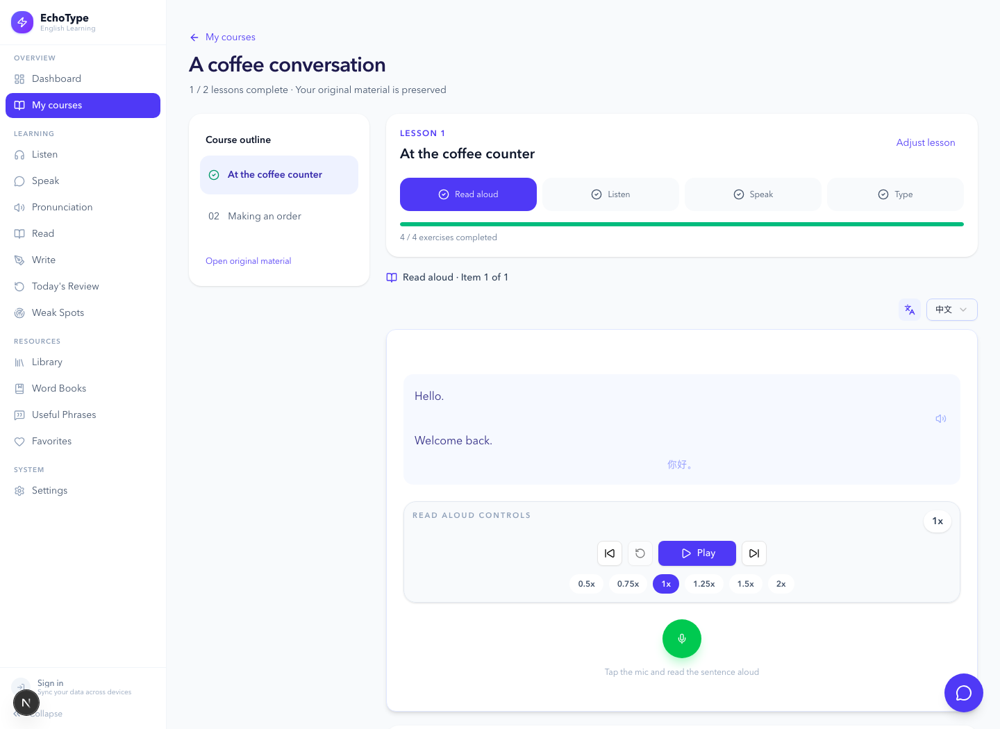
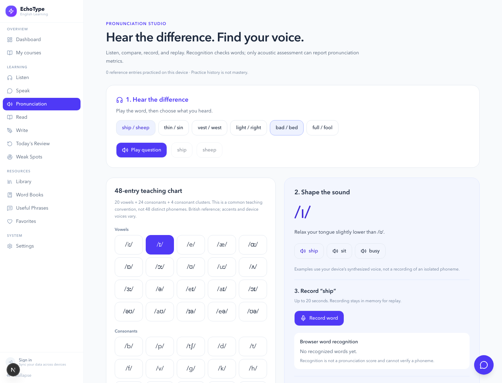
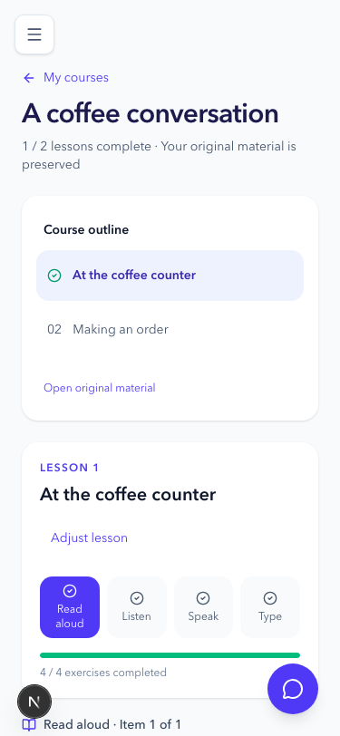
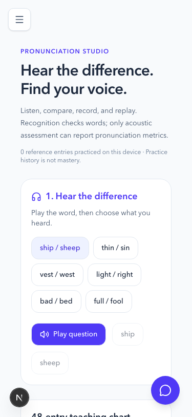

先处理到期复习，再继续自己的材料，最后练习薄弱点。原有自定义每日计划仍可展开使用。
从收集材料，
到完成每天的一课。
本版以“今日学习 → 我的课程 → 课时练习”为主线，保留原有独立模块、导入、翻译、收藏和每日目标。另一项重点是把发音练习改成能说明证据来源的听辨与录音工作台。
LearningUnit 组织资料，Lesson 组织练习。自动拆课只建立派生索引，原文、收藏、音频和历史记录保留。
课时完成依赖真实保存的练习记录。浏览器只反馈词语识别，音素评分只展示专业服务实际返回的数据。
01 / 今日学习
首页先回答“现在学什么”。统计、模型配置与目标设置退到次级区域，减少开始练习前的选择。

02 / 一份材料，连续练习
桌面左侧课时目录，右侧是听、朗读、口语与输入练习。完成记录写入后才开放继续；下一课由用户明确进入，刷新可以续学。

03 / 听辨 → 口型提示 → 录音回听
48 项教学表分为 20 个元音、24 个辅音和 4 个辅音组合，并明确这不是 48 个独立音素。先听易混词，再录音比较；专业测评单独标注来源。

04 / 手机布局
侧栏收起，课程目录与练习区域按阅读顺序排列；主按钮保持易点按，不依赖横向滚动。


实现边界
自动迁移覆盖当前账户本地数据库的既有资料；云端资料同步下载后按同一规则重建课程。未导入的内置资料包仍从资料库导入。发音证据当前按账户保存在本设备，并纳入 JSON 备份；没有宣称云端同步。真实 SpeechSuper 评分需要有效凭据，本次仅做协议、解析及模拟流程验证。